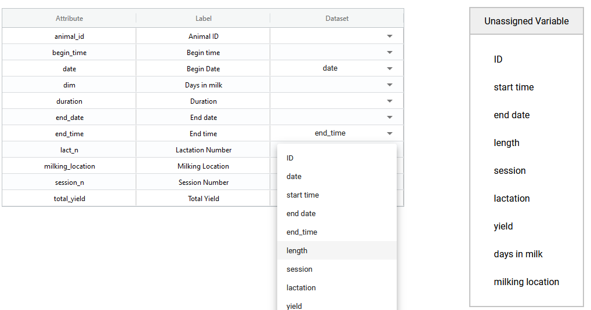

In order to verify your data against the rules in the schema, you must ensure that you match the attributes of both. Otherwise the verifier won't know which rules to apply to your dataset.
Your dataset can contain more attributes than exist in your schema. The verification will ignore those columns and you can proceed to verify the data that you do match to the schema.
Your attributes of your dataset may be named differently compared to the schema. You may also have more, or less, attributes compared to the schema in your dataset. The Data Verifier attempts to match attributes in the schema to attributes in your dataset. If there are incorrect or incomplete matches you can fix that here.
In this figure you can see that some of the attributes (e.g. date and end_time) have been matched correctly between the dataset and the schema. Unassigned variables are those columns of data in your dataset that don't yet match a schema attribute. In the Dataset column you can select these Unassigned Variables from the dropdown list and match attributes between your dataset and schema.
